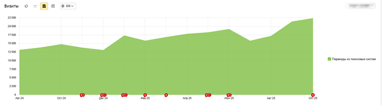
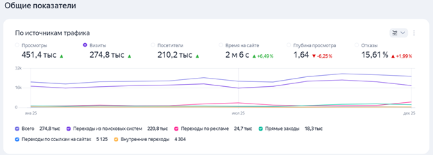
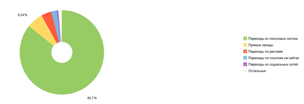
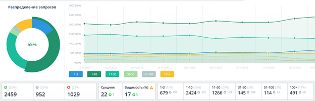
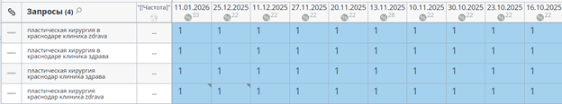
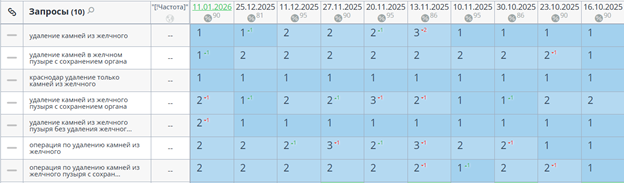
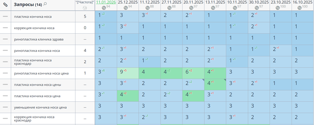
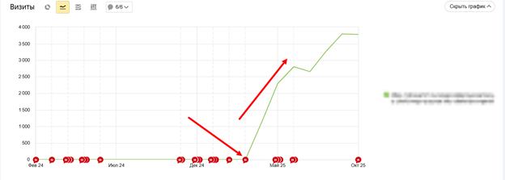

01
О клиенте
«Здрава» - клиника современной хирургии с широким спектром услуг (от пластической хирургии до эндопротезирования). Расположена в городе Краснодар.
Укрепить позиции и трафик и увеличить количество запросов вошедших в ТОП-3

«Здрава» - клиника современной хирургии с широким спектром услуг (от пластической хирургии до эндопротезирования). Расположена в городе Краснодар.
Укрепить позиции и улучшить трафик на сайт (на момент начала продвижения была просадка).
Продвижение и создание новых услуг на сайте и улучшить юзабилити и техническую оптимизацию.
Работа велась с сайтом методично: выполнялись доработки по улучшению дизайна сайта и его адаптивность и параллельно велась работа над повышением качества текстов на страницах услуг. К примеру, был ряд страниц, в которых не хватало симптоматики и то, как подготовиться к приему и отсутствовал прайс.
В результате сайт начал получать больше трафика и все чаще попадал в ответы Алисы.
Скрин трафика:


Основная доля визитов состоит из поисковой системы.

Позиции сайта после непосредственной оптимизации выросли и закрепились в выдаче. Достичь такого результата можно только при регулярной работе.
На скриншотах представлены позиции, с учетом приоритетов.

Пример запросов в ТОП-3 (выборка по услугам/направлениям)



В ходе сотрудничества был проведен технический аудит сайта с составлением плана продвижения (с учетом приоритетов). Для охвата большего количества поисковых фраз проводились доработки существующих текстов для страниц услуг (и блога) и с последующим расширением структуры сайта, что дало больше каналов входа и помогло сайту закрепиться в поисковой выдаче. С учетом постоянных обновлений поисковой выдачи постоянно проводились работы по улучшению сайта (внешняя и внутренняя оптимизация).
Примером оптимизации услуг, одна из популярных страниц «Удаление камней из желчного пузыря без удаления органа» (была создана в марте 2025 года и получила трафик в 19 703 переходов), скрин:
